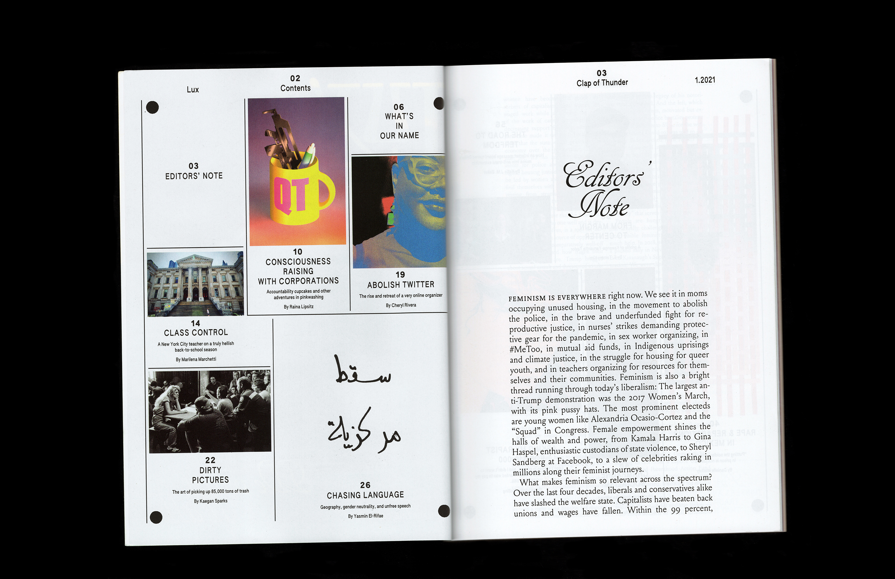
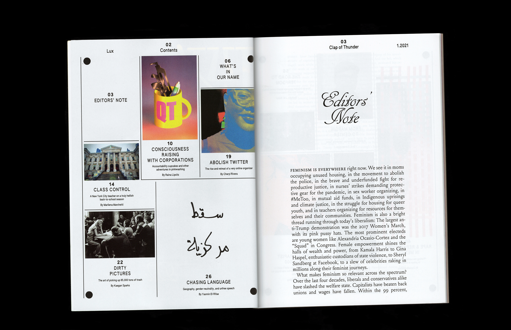
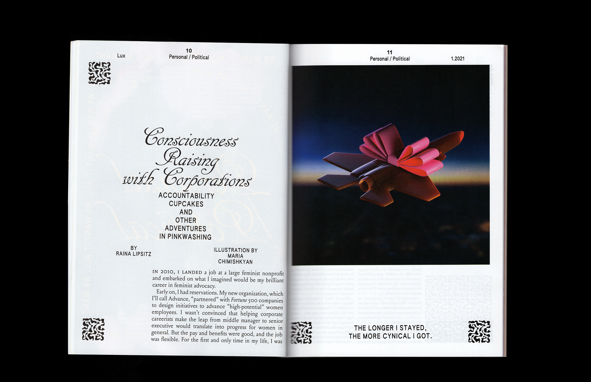
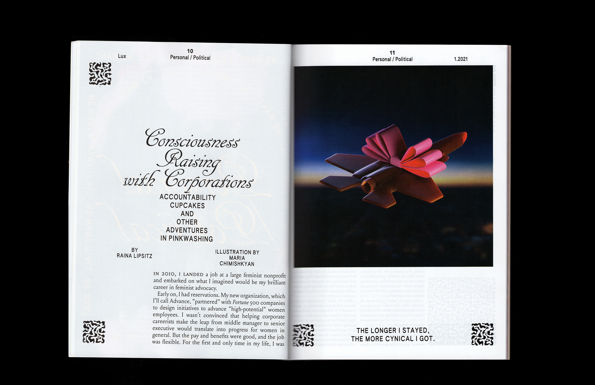
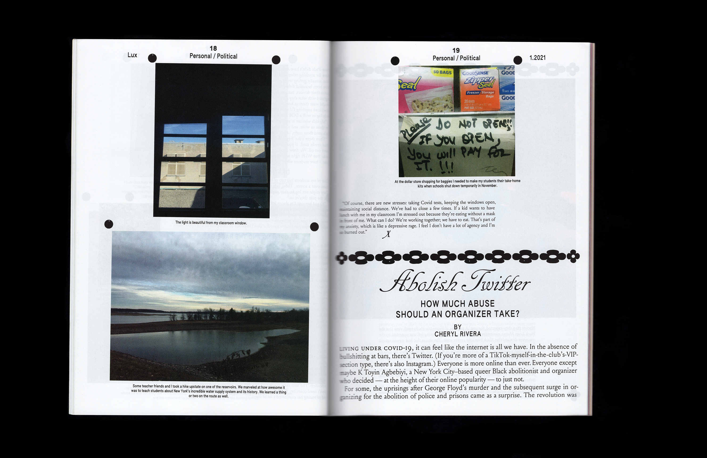
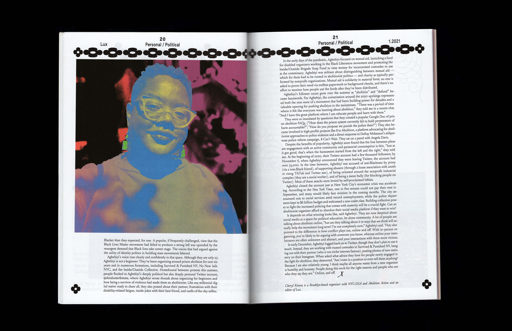
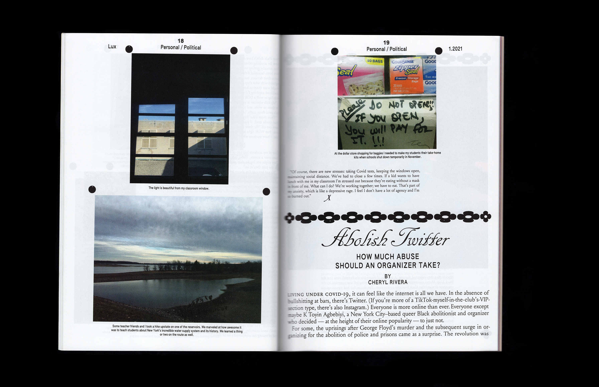
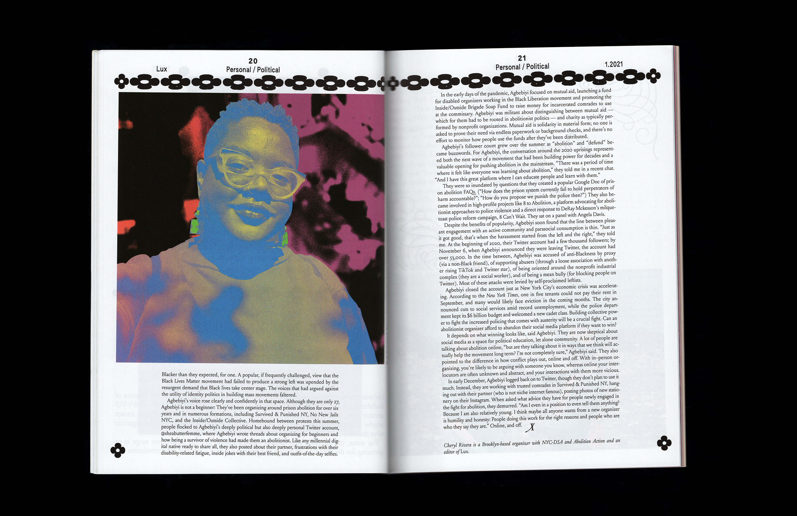
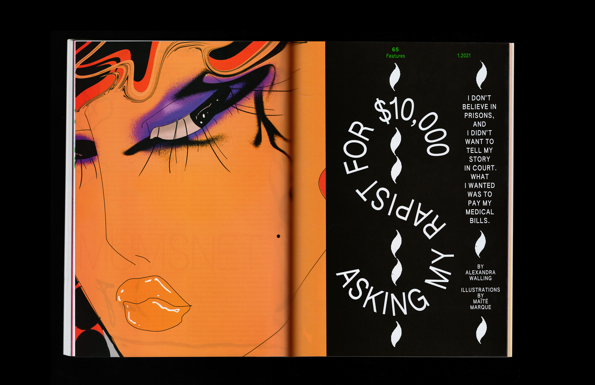
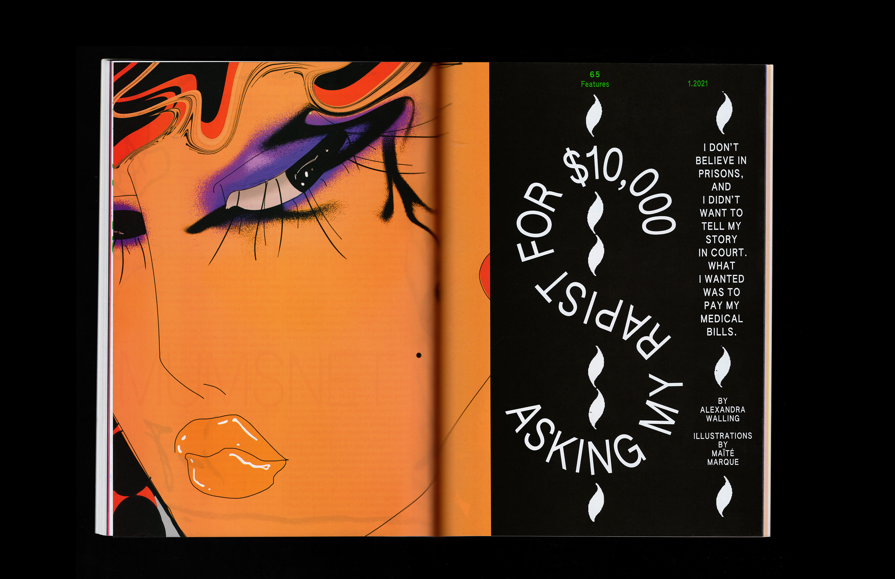

Issue 1
Lux
Issue (96pp, high-gloss cover w/spot yellow)
2021
Lux is a socialist feminist magazine that takes its name from Rosa Luxemburg and believes in abundance for all. It’s shiny, it’s pink, it’s smart—and it’s visually inspired by glossies, Art Deco, and Dr. Bronner’s. It turns the traditional women’s consumer magazine upside down.
Creative direction by Sharanya Durvasula. Logo drawn by Margot Lévêque.
 
 
 



 
